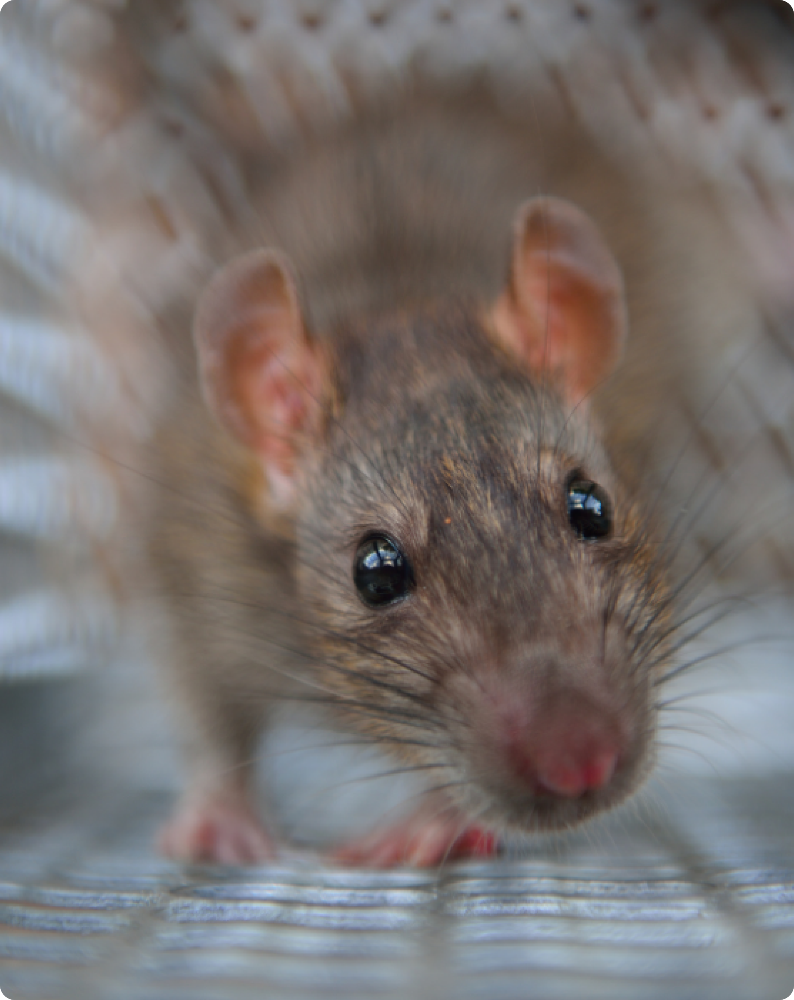
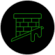
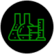

INTERVENTION ECO RESPONSABLE
C’EST LA SAISON DES GUÊPES ET FRELONS !
Notre équipe est à votre disposition pour intervenir dans les plus brefs
délais

Les rats ou souris représentent un danger pour votre santé, bien-être et sécurité
Vivant dans des zones infectes, contaminées et polluées, les rats, souris et surmulots représentent une menace pour la santé. Ils propagent diverses maladies graves comme la peste, la rage et bien plus encore. Les rats répandent des germes et des bactéries en rongeant et en souillant par leurs passages. Au cours de sa vie, le rat est excessivement prolifique (un couple de rats peut avoir plus de 200 000 descendants en 3 ans).
Selon des expériences en laboratoire, le rat peut manger un tiers de son poids par jour, soit plus de 35 kg de nourriture par an, mais qu'il excrète 3 à 4 fois plus. Pour user ses dents de devant, les rats vont ronger tout sur son passage, notamment les fils électriques, les raccords de gaz pouvant provoquer un court-circuit, un incendie, une fuite de gaz et même une explosion.
Dératisation 77 : nos autres prestations
Parce que les nuisibles qui prolifèrent dans les zones privées et publiques sont nombreux et variés, nous avons développé de nombreuses autres activités axées autour de l’extermination des insectes (la désinsectisation : fourmis, puces , blattes, cafards, punaises, insectes volants, guêpes, frelons…), des volatiles (la dépigeonnisation) ainsi que la désinfection de surfaces infectées. Pour en savoir plus sur nos services, nous vous invitons à consulter nos prestations en ligne ou à directement prendre contact avec un de nos techniciens.
EXTERMINATION DE NUISIBLES
DEMOUSSAGE DE VOTRE TOITURE

RAMONAGE & DEBISTRAGE DE VOTRE CHEMINEE
À propos de notre service de Dératisation 77
L'obligation de se protéger contre les rongeurs et les insectes
nuisibles est stipulée dans les règlements sanitaires départementaux.
L’élimination des rongeurs nuisibles comme les rats, les mulots et les
souris est primordiale, car, ils causent des dégâts importants et des
maladies comme la peste, la leptospirose, le streptobacille ou la fièvre
de Haverhill.
Dératisation 77 est un service dans lequel vous pouvez avoir confiance quel que soit votre problème de nuisibles à domicile ou au travail. Nous vous proposons un service efficace, durable et de plus haut niveau de sécurité.
Présente en Seine-et-Marne, PFP Service a su s’imposer dans le secteur de la dératisation, de la désinsectisation et de la désinfection pour devenir une société très réputée dans son domaine.
Notre service de Dératisation 77 est spécialisé dans la lutte contre les nuisibles comme les rats, les souris et les rongeurs. Depuis son instauration, l’équipe œuvre au développement et à la mise en place des solutions innovantes pour contrôler et exterminer les rats.
Avec plusieurs années d'expérience dans le domaine, Dératisation 77 a su se frayer une place importante dans la lutte contre les rongeurs et les nuisibles. Nous effectuons plus de 20 interventions par jour pour radier les rats. Notre mission est de protéger la santé publique et d'améliorer la qualité de vie de nos clients particuliers et entreprises en fournissant des solutions innovantes et rentables de lutte contre les rongeurs comme le rat à nos clients.
NOS POINTS FORTS
Dératisation 77 intervient pour vos problèmes de dératisation et
d’autres nuisibles.
Nous proposons à nos clients :
Un contrat d'entretien sur mesure
Des services même en fin de semaine
et les jours fériés
et les jours fériés
Une intervention rapide
Des conseils et ventes de produits efficaces
dans nos succursales pour lutter contre les
rongeurs et les insectes
dans nos succursales pour lutter contre les
rongeurs et les insectes
Notre engagement
Une intervention axée dans la lutte contre les animaux néfastes à la santé et au quotidien doit sa réussite aux actions ciblées et à la parfaite connaissance des nuisibles par une équipe consciencieuse et qui peut s’adapter à toutes les situations sur terrain qui peuvent survenir.
Notre service en dératisation dans le 77 exerce suivant une charte qualité honnête et transparente auprès de tous nos clients. Il suit un plan de traitement adéquat et efficace sur le long terme, enfin nos prestations sont appliquées selon les normes en vigueur en termes de prévention et de traitement.
Par ailleurs, nos techniciens s’engagent à suivre des méthodes modernes et sans danger pour l’environnement pour repérer et éradiquer les nuisibles. Parce que la santé et la sécurité de nos clients comptent pour nous, nous mettons un point d’honneur à suivre toutes les législations et les réglementations actuelles.

Vous avez besoin d’une assistance pour éliminer vos nuisibles ? Appelez-nous au 06 29 95 32 62 et recevez une demande de devis sur mesure dans de brefs délais.
NOS INTERVENTIONS EN 3 ETAPES
REALISATION DE DEVIS SELON VOS BESOINS
NOUS ASSURONS VOTRE SATISFACTION
Un service de Dératisation pour les
particuliers
Que vous logez dans une propriété ou un appartement, notre entreprise
spécialisé en Dératisation dans le 77 peut effectuer des traitements
contre tous les types de nuisibles existants dont les rats, les insectes
et les volatiles qui envahis vos greniers, murs, cuisines… Nos
techniciens certifiés feront en sorte que votre zone infestée devienne
un espace propre en un minimum de temps.
À la moindre détection d’infestation, n’hésitez pas à nous contacter pour que notre équipe d’expert en dératisation dans le 77 puisse effectuer un état des lieux ainsi qu’un devis associé à votre situation.
Nous agissons dans votre intérêt et dans celui de vos animaux de compagnie, un dispositif de lutte contre les nuisibles est mis en place pour éliminer rapidement et durablement.
Un service de Dératisation pour les particuliers
Votre établissement est infesté par des rongeurs ou des insectes qui nuisent à votre réputation ? Vous ne
parvenez pas à trouver de solutions efficaces sur le long terme ?
Notre société spécialisée en dératisation dans le 77 a des solutions adaptées à vos problèmes de
nuisibles. Notez d’ailleurs que notre entreprise a été agréee par le ministère de l’Environnement et que
nous avons une équipe permanente qui peut intervenir 24h/24 et 7j/7 dans les plus brefs délais et dans la
plus grande discrétion.
Vous pouvez nous faire confiance pour vous assister dans tous vos problèmes impliquant la prolifération de
nuisibles. Pour un contact rapide et l’obtention d’un devis rapide, vous pouvez aussi bien nous joindre
via notre formulaire de contact en ligne ou au 06 29 95 32 62.
Un service de Dératisation pour les particuliers
Fervents défenseurs de l’environnement, nous n’utilisons que des produits d’origine naturels qui
constituent des traitements tout aussi efficaces que les produits chimiques.
Nos principaux traitements comprennent des biocides écoresponsables qui sont de tout nouveau concept sans
danger pour l’environnement.
Par ailleurs, leur efficacité a été prouvée et présente une meilleure efficacité que les autres
traitements traditionnels.
NOS CERTIFICATIONS